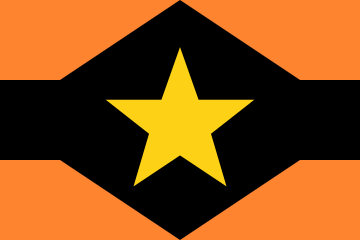
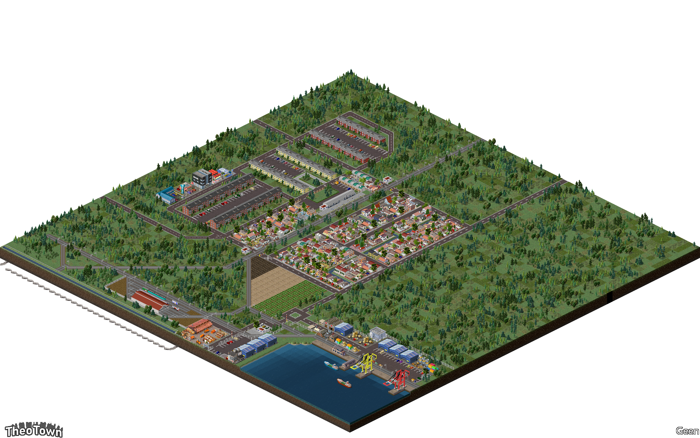

Pengenalan
Hallo Saya Kiki012 atau Kiki Dari Banyuwangi Jawa Timur,Dengan Usia 15 Tahun,Secara Autodidak saya adalah sebuah programer dan kreator plugin theotown sederhana,Tertarik dengan politik dan programing.
| Biodata | |
|---|---|
| Nama: | Enggar Rizki Maulana |
| Alias: | Kiki,Enggar,Rizki,dan Maulana |
| Jenis Kelamin: | Laki-Laki (♂) |
| Pekerjaan: | Pelajar |
| IQ: | 110-118 |
| Usia: | 15 Tahun |
| Kelahiran | |
|---|---|
| Tanggal Lahir: | 27 November 2006 |
| Tempat lahir: | Privasi! |
| Pribadi | |
|---|---|
| Tipe Kepribadian: | N/A (Belum Di Isi) |
| Orientasi Seksual: |
 |
| Hobi: | Menggambar... |
| Ciri Fisik | |
|---|---|
| Etnis: | Jawa |
| Tinggi: | ± 160 CM (5ft 3 inch) |
| Berat: | 32-38 KG (79.3 lb) |
| Warna Rambut: | Hitam |
| Warna Mata: | Hitam/Coklat (tidak yakin) |
| Kediaman | |
|---|---|
| Negara: | Indonesia |
| Pronvisi: | Jawa timur |
| Kabupaten: | Banyuwangi |
| Kecamatan: | Privasi! |
| Zona Waktu: | +7 GMT |
| Pandangan hidup | |
|---|---|
| Agama: | Islam |
| ideologi: | Pancasila,liberal. |
| Politik: | Sosial Liberal |
Deskripsi
Hai Saya Enggar Rizki Maulana dari Indonesia,Saya suka bermain video game seperti Theotown,Minecraft,Blue Archive,OpenTTD,Mindustry dan sejenisnya.
Saya Membuat Program Dalam Bahasa Json,Lua,HTML,CSS,dan JS (javascript),Di dunia nyata saya bisa berbicara dalam beberapa bahasa,yaitu bahasa indonesia,jawa,osing,madura,dan inggris.
Mata Pelajaran Yang saya sukai adalah IPA (Biologi),IPS,dan PPKN,Saya Cuma orang sederhana seperti pada umumnya,membuat plugin adalah salah satu hobi saya.
Menejelajahi dunia melalui internet,membaca wikipedia,dan terkadang menerjemahkan sebuah artikel di wikipedia.
Saya tidak tahu apa lagi yang di isi untuk website ini,jadi saya tambahkan koleksi foto-foto saya.
Koleksi

Bendera Utama Republik Sosialis Yakanesia

Bendera Alternatif Republik Sosialis Yakanesia

Gambar Latar Belakang Website Ini.